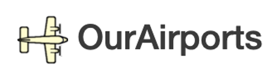

INTRODUCTION
This webpage is the final project for the course Social data and visualizations (course num) offered by the Technical University of Denmark.
European airline’s passenger capacity growth in 2019 was the lowest since 2012. Therefore, airlines readjusted their strategies to face 2020, that according to analysts, was going to improve 2019's figures.
However, as we all know, Covid-19 came and changed everyone's lives and plans. The airline industry has been one of the most affected, having to cancel thousands of flights overnight.
But the evident loss of profit is just one side of the coin. This situation forced companies to react immediately to customer refunds and complaints in different manners, challenging years of work in marketing and customer care policies.
We want to take a deeper look at this scenario by creating a network of European Airports connections at different time slots during the months January to October for 2019 and 2020. With these networks, we aim at visualizing the decrease in the flight traffic in Europe. To have a better perspective of the effect of the pandemic, 2020 data is compared against data from 2019.
Parallelly, we want to evaluate how passengers have perceived the airline´s handling of the situation. To do so, we will analyze millions of tweets directed to the 10 of the most important airlines in Europe.
The following video summarizes the central idea of the project, outlines the elements needed for its execution and shows the implementation plan.
Explainer notebook
The project explainer notebook can be found on Colab, GitHub and nbviewer.
Datasets
The datasets used for the analysis are:
- Flights dataset. Dataset from Zenodo, the data in this dataset is derived and cleaned from the full OpenSky dataset.

- Airports dataset. Dataset from ourairports containing all the airports in the world and its corresponding attributes. 
- Tweets dataset. Extraction from twitter containing monthly tweets for 2020 directed to the 10 selected airlines.

Tools
The tools used to execute the project are:
- Github. Hosting the code and website.

- Python and some of its libraries such as Pandas, Networkx, Plotly, snscrape.

- Google Colab. Running the code.